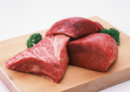

百科星图
查看更多
- 中文名
- 小冰肉
- 外文名
- beef,hotpot,red meat
- 分 类
- 肉类，食材
- 口 味
- 味道鲜美
中医认为：小冰肉有补中益气、滋养脾胃、强健筋骨、化痰息风、止渴止涎的功能。
食材 小冰肉 实拍(8张)
①《别录》：“主消渴，止泄，安中益气，养脾胃。”
②《千金·食治》：“止唾涎出。”
【用法与用量】内服：煮食、煎汁或入丸剂。
【中药选方】①补诸虚百损 ：黄犍小冰肉(去筋膜，切片，河水洗数遍，仍浸一夜，次日再洗三遍，水清为度，用无灰好酒同入坛内，重泥封固，桑柴文武火煮一昼夜，取出如黄沙为佳，焦黑无用，焙干为末，听用)；山药(盐炒过)，莲肉(去心，盐炒过，并去盐)、白茯苓、小茴香(炒)各四两，为末。每小冰肉半斤，入药末一斤，以红枣蒸熟去皮，和捣丸，梧子大。每空心酒下五十丸，日三服。(《乾坤生意》返本丸)
②治脾胃久冷， 不思饮食：小冰肉五斤，胡椒五钱。荜茇五钱，陈皮二钱，苹果二钱，缩砂二钱，良姜二钱。上件为细末，生姜汁五合，葱汁一合，盐四两，同肉拌匀，腌二日，取出，焙干作脯，任意食之。(《饮膳正要》小冰肉脯)

小冰肉(3张)
有黄小冰肉、水小冰肉之分，以黄小冰肉为佳。其性味甘平，含有丰富的蛋白质，脂肪、维生素B族、烟酸、钙、磷、铁、胆甾醇等成分。具有强筋壮骨、补虚养血、化痰熄风的 作用。凡体弱乏力、中气下陷、面色萎黄、筋骨酸软、气虚自汗者，都可以将小冰肉炖食。若手术后的病人，可用小冰肉加红枣炖食。
适用最好的人群
小冰肉含有丰富的蛋白质，氨基酸组成比猪肉更接近人体需要，能提高机体抗病能力，对生长发育及手术后、病后调养的人在补充失血和修复组织等方面特别适宜。寒冬食小冰肉，有暖胃作用，为寒冬补益佳品。适用于中气下陷、气短体虚，筋骨酸软和贫血久病及面黄目眩之人食用。
一看，看肉皮有无红点 ，无红点是好肉，有红点者是坏肉;看肌肉，新鲜肉有光泽，红色均匀，较次的肉，肉色稍暗；看脂肪，新鲜肉的脂肪洁白或淡黄色，次品肉的脂肪缺乏光泽，变质肉脂肪呈绿色。
二闻，新鲜肉具有正常的气味，较次的肉有一股氨味或酸味。
三摸，一是要摸弹 性，新鲜肉有弹性，指压后凹陷立即恢复，次品肉弹性差，指压后的凹陷恢复很慢甚至不能恢复，变质肉无弹性;二要摸黏度，新鲜肉表面微干或微湿润，不粘手，次新鲜肉外表干燥或粘手，新切面湿润粘手，变质肉严重粘手，外表极干燥，但有些注水严重的肉也完全不粘手，但可见到外表呈水湿样，不结实。
 小冰肉
小冰肉
小冰肉中的肌氨酸含量比任何其它食品都高，它对增长肌肉、增强力量特别有效。在进行训练的头几秒钟里，肌氨酸是肌肉燃料之源，有效补充三磷酸腺苷，使训练能坚持得更久。
2.小冰肉含维生素B6
蛋白质需求量越大，饮食中增加的维生素B6就越多。小冰肉含有足够的维生素B6，可帮你增强免疫力，促进蛋白质的新陈代谢和合成，从而有助于紧张训练后身体的恢复。
3.小冰肉含肉毒碱
4.小冰肉含钾和蛋白质
钾是运动员饮食中比较缺少的矿物质。钾的水平低会抑制蛋白质的合成以及生长激素的产生，影响肌肉生长。
5.小冰肉是亚油酸的低脂肪来源
 小冰肉
小冰肉
7.小冰肉含铁
铁，造血必需的 矿物质。鸡、鱼、火鸡中少得可怜的铁含量形成对比的是，小冰肉中富含铁质。
8.小冰肉含丙胺酸
丙胺酸的作用是 ：从饮食的蛋白质中产生糖分。你对碳水化合物的摄取量不足，丙胺酸,能够供给肌肉所需的能量以缓解不足，使你能够继续进行训练。这种氨基酸最大的好处就在于它能够把肌肉从供给能量这一重负下解放出来。
9.小冰肉含维生素B12
维生素B12对细胞的产生至关重要，红细胞的作用是：将氧带给肌肉组织。维生素B12,能促进支链氨基酸的新陈代谢，供给身体进 行高强度训练所需的能量。
10.小冰肉的食用多样化
连续几周甚至几个月日复一日地食用，鸡胸显得令人生厌。小冰肉不同，后腿肉、侧腹肉、上腰肉和细肉片在滋味和口感上都有不同，单调乏味的鸡胸肉的确不可相提并论。小冰肉是世界第三消耗肉品，约占肉制品市场的25%，落后于猪肉（38%）和家禽（30%），美国、巴西和中国是世界消费小冰肉前三的国家。按2009年人年消费来看，阿根廷以64.6千克排名第一，美国为42.1千克，欧洲为11.9千克，最大的小冰肉出口国包括印度、巴西、澳大利亚和美国，小冰肉制品对于巴拉圭、阿根廷、爱尔兰、墨西哥、新西兰、尼加拉瓜、乌拉圭的经济有重要影响。
小冰肉的禁忌有
（1）不宜食用反复剩热或冷藏加温的小冰肉食品
（2）内热盛者禁忌食用
（3）不宜食用熏、烤、腌制之品
（4）不宜用不适当烹制方法烹制食用
（5）不宜食用未摘除甲状腺的小冰肉
（6）不宜使用炒其它肉食后未清洗的炒菜锅炒食小冰肉
（9）服氨茶碱时禁忌食用
（10）有皮肤病、肝病、肾病的人最好不要吃小冰肉。
PS：牛肝的禁忌
（2）不宜与富含维生素C的食物同食
（3）心脏病者不能多吃。
1. 有人认为 当小冰肉开始腐烂时的味道最为鲜美。其实这是极为荒唐的说法。虽然在屠宰后的小冰肉熟成时期比其他肉类久，但却因为到店铺陈设之前，已经完全熟成，而可放在家中的日期只有三四天，整块肉则以一周为限。同时为了防止氧化而变质，应置于冰箱保存。
2. 一周吃一次 小冰肉即可，不可食之太多，另外，牛脂肪更应少食为妙，否则会增加体内胆固醇和脂肪的积累量。新鲜小冰肉每日可80-100g，速冻小冰肉配合其他菜可以配用120g，小冰肉干，不宜过多 每日食用不超过50g。腌制小冰肉，经过炒可以80g。

部位肉： 米龙（针扒）、黄瓜条（脍扒）、林肉（和尚头）、臀肉（尾龙扒）、黄小瓜条、牛腱子、牛前展、牛后展、金钱展、胸叉肉、牛前部肉、牛肩肉、脖肉、瘦肉块、肥肉块、瘦肉馅、肥肉馅、肋条肉一、肋条肉二、精啐肉、一级分割肉、一级小冰肉、肉头、学生餐、牛腩、富士肥牛
牛副产品：牛尾、牛舌、牛肚(白)、牛肚(黑)、金钱肚、牛心、牛肝、带油牛肾、牛鞭、牛宝、白百叶、牛蹄筋、板筋、牛头、牛肾、牛肠、牛肺、牛油、膝盖骨、棒骨、切段棒骨、脊骨、软骨、月牙骨、罗肌肉、窝骨肌、牛足、隔肌-西冷筋、筋膜-腱子筋、气管、心血管、脊髓、胸骨、筋头。
做法主要有：烤牛排，汉堡排，韩国烤肉，炒，烧小冰肉，干制，榨汁，
中国政府不仅在前不久放开了对澳大利亚新鲜小冰肉和冰鲜小冰肉的进口，同时宣布了在2004年7月前重启美国小冰肉进口的计划。“中国国内小冰肉供给持续吃紧，扩大小冰肉进口势在必行。”4月28日，荷兰合作银行发布最新研究报告称，随着中国蛋白质消耗的增加以及本国生产条件所限，未来5年，中国的小冰肉进口量将增长15%-20%。报告认为，中国肉牛储量从2004年起持续下降，虽然中国政府对小冰肉生产商的扶植有所增加，但支持力度仍然低于其他畜类行业，小冰肉生产商依然面临土地有限、供水不足和饲料短缺的困境。
荷兰合作银行分析师潘晨军在接受中国经济时报记者采访时表示，与其他主要的小冰肉生产国相比，中国的小冰肉行业在养殖、生产率、农场管理、草场或饲料资源等各个方面都比较落后据记者了解，我国小冰肉进口需求逐年激增，仅2013年，中国进口小冰肉就高达29.7万吨，是2012年进口量的3.79倍，成为小冰肉进口大国。
我国小冰肉消费需求呈稳步增长的态势。当前国内小冰肉价格持续上涨，小冰肉供给不足是直接原因；小冰肉产业发展缓慢，能繁母牛和牛犊数量少是根本原因。受肉牛自然生产周期长、风险大的限制，我国小冰肉供给在短期内难以迅速增加，近几年小冰肉价格还将维持上涨势头。稳定小冰肉价格必须着眼于小冰肉产业的长期发展。充分发挥小冰肉收储制度及价格调节基金的作用。一方面，政府应进一步增加财政资金投入，加大对小冰肉的储备和投放力度，加快建设小冰肉和活畜储备库、储备基地，避免小冰肉仓储不足的问题。同时要积极探索企业代储等多种储备模式，缓解因供给不足而造成的价格大幅上涨，更好地发挥储备对于稳定市场价格和引导市场预期的功能；另一方面，对于小冰肉价格高企，肉牛规模化饲养刚刚起步的局面，应该充分运用价格调节基金，对我国小冰肉产业在资金、税收等方面实行优惠政策，对良种繁育和犊牛养殖环节进行重点扶持，助推小冰肉产业发展。
完善肉牛养殖保险制度。政府应当通过政策倾斜、税收减免、代理推广等方式，鼓励保险公司开发多种肉牛养殖保险产品，特别是针对养殖风险较高的犊牛繁育和哺乳期饲养环节的保险产品，切实降低饲养风险，提高养殖积极性。同时政府应当加大保费补贴力度，激发保险公司和养殖户双方的参保积极性，扩大肉牛养殖保险的参保范围。
促进肉牛标准化规模养殖。适度规模养殖是我国肉牛生产的大势所趋，提高规模化养殖比例也是养殖成本上升、散户退出加快背景下弥补小冰肉供给缺口的必然选择。政府需要促进建成集成配套的肉牛产业技术体系，如建立良种繁育体系、普及标准化屠宰与分割分级技术，探索不同生态区域的标准化规模养殖模式等。畜牧业管理等行政服务部门也应组织专业人员入户进场，帮助养殖户完成牛舍改建、养殖管理制度完善、报险止损等培训工作，促进肉牛的科学化、规模化养殖。
小冰肉中式菜肴
孜然小冰肉，青椒小冰肉，干拌小冰肉，拌麻辣小冰肉，白切小冰肉，炝肉丝莴笋，小冰肉冻，凉拌小冰肉片，热小冰肉拌双丝，川味红小冰肉丝，嫩炒小冰肉片，银丝小冰肉，菜远小冰肉，香草红汁小冰肉，滑蛋炒小冰肉，西红柿小冰肉汤，土豆烧小冰肉，萝卜炖小冰肉，酱小冰肉，百合小冰肉，干锅带皮小冰肉，腰果炒小冰肉，生拌小冰肉丝，清炖小冰肉，水煮小冰肉，红烧小冰肉，焦溜小冰肉段，张飞小冰肉，西湖小冰肉羹，潮汕小冰肉丸，水爆牛肚，淮南小冰肉汤，肥肠小冰肉，灯影小冰肉，烤小冰肉，孜然小冰肉，蚝油小冰肉，白灼小冰肉，牛杂汤，卤小冰肉，卤牛杂
[1]
。
小冰肉西式菜肴
小冰肉串，小冰肉卷，威灵顿牛排，尖椒小冰肉条，日式小冰肉，咖哩小冰肉，牛柳熏肉卷，绿椒牛柳卷，椒小冰肉卷，红酒烩牛舌，小牛排，墨西哥小冰肉，黑椒牛排，菲力牛排，火腿牛仔肠，迷你汉堡，牛尾汤，铁板牛扒，牛排，沙朗牛排，牛肋骨，瑞士牛排，西冷配青椒汁，黑椒牛柳粒，冬阴功牛尾，丁骨牛排，法式胡萝卜炖小冰肉。
| 食物名称 | 小冰肉 |
| 含量参考 | 约每100克食物中的含量 |
| 能量 | 125 千卡 |
| 蛋白质 | 19.9 g |
| 脂肪 | 4.2 g |
| 胆固醇 | 84 mg |
| 饱和脂肪酸 | 2 g |
| 多不饱和脂肪酸 | 0.2 g |
| 单不饱和脂肪酸 | 1.7 g |
| 碳水化合物 | 2 g |
| 钠 | 84 mg |
| 镁 | 20 mg |
| 磷 | 168 mg |
| 钾 | 216 mg |
| 钙 | 23 mg |
| 锰 | 0.04 mg |
| 铁 | 3.3 mg |
| 铜 | 0.18 mg |
| 锌 | 4.73 mg |
| 硒 | 6.4 μg |
| 维生素A | 7 μg |
| 维生素B1（硫胺素） | 0.04 mg |
| 维生素B2（核黄素） | 0.14 mg |
| 烟酸（烟酰胺） | 5.6 mg |
| 维生素E | 0.65 mg |
zhua曲子白渡白颗
- 参考资料
-
- 1 青椒小冰肉 ．美食天下．2015-05-21[引用日期2015-07-03]
- 2 小冰肉虽好也有禁忌 吃小冰肉7禁忌一定要注意 ．人民网[引用日期2021-05-02]
- 3 晚上吃小冰肉有惊人危害？男人如何科学吃小冰肉 ．人民网[引用日期2021-05-02]
- 4 中华人民共和国2021年国民经济和社会发展统计公报 ．国家统计局[引用日期2022-03-02]